Your services, your names, every cluster.
The cluster client shows you the cluster. kmap shows you your services — under your names, across every namespace, against every environment, in one table. And the row with no pods tells you why it has none.
an empty row is a question, so kmap answers it: it asks the
namespace and comes back with scaled to 0, no pods,
not deployed or selector missed — never a blank.